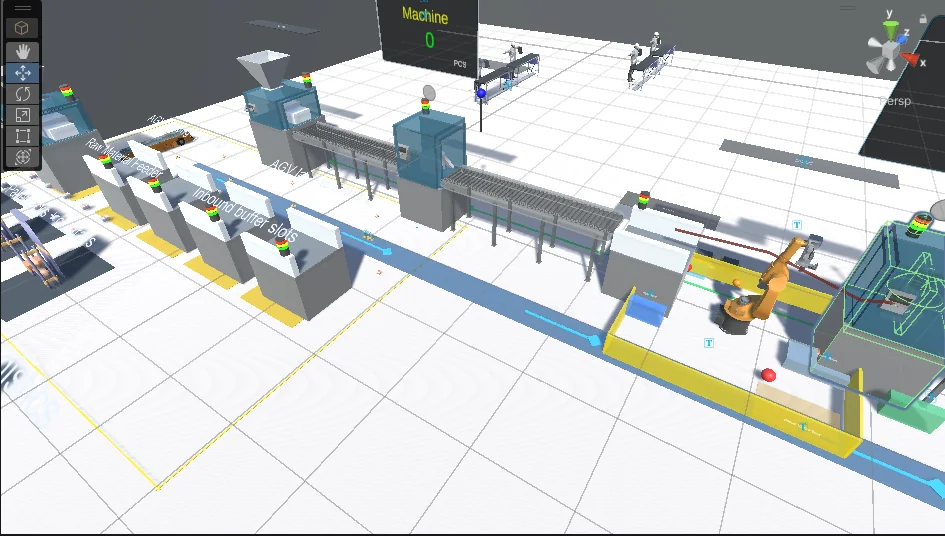
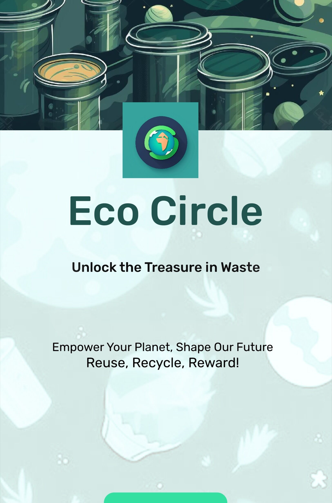
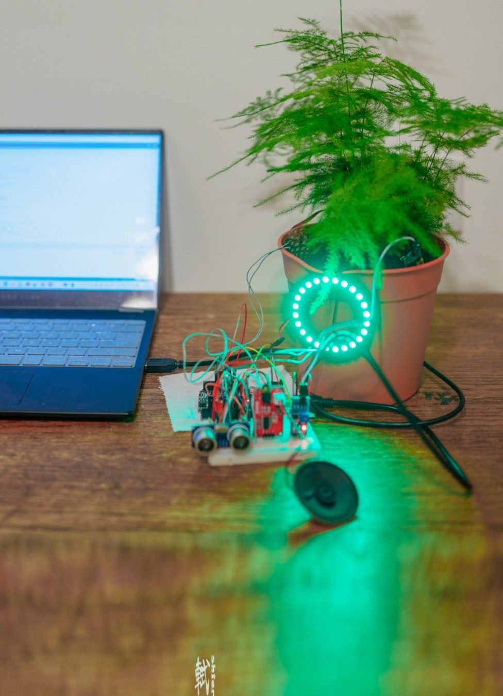
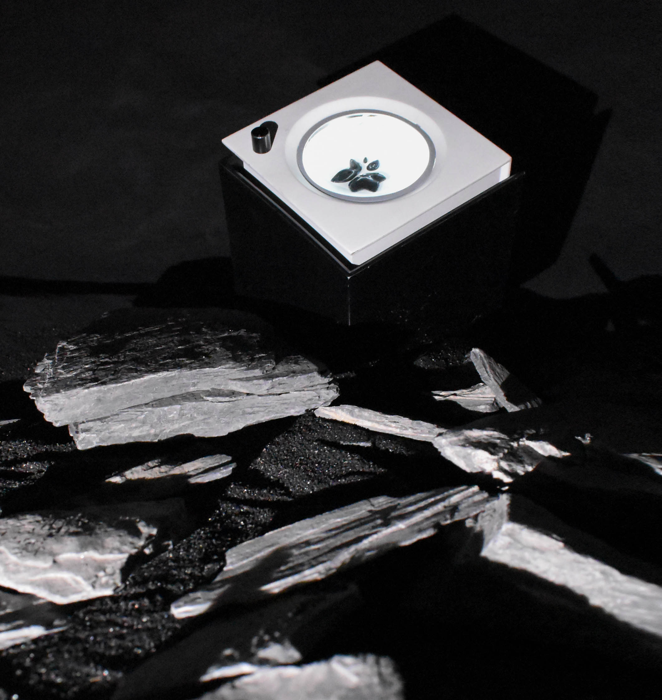
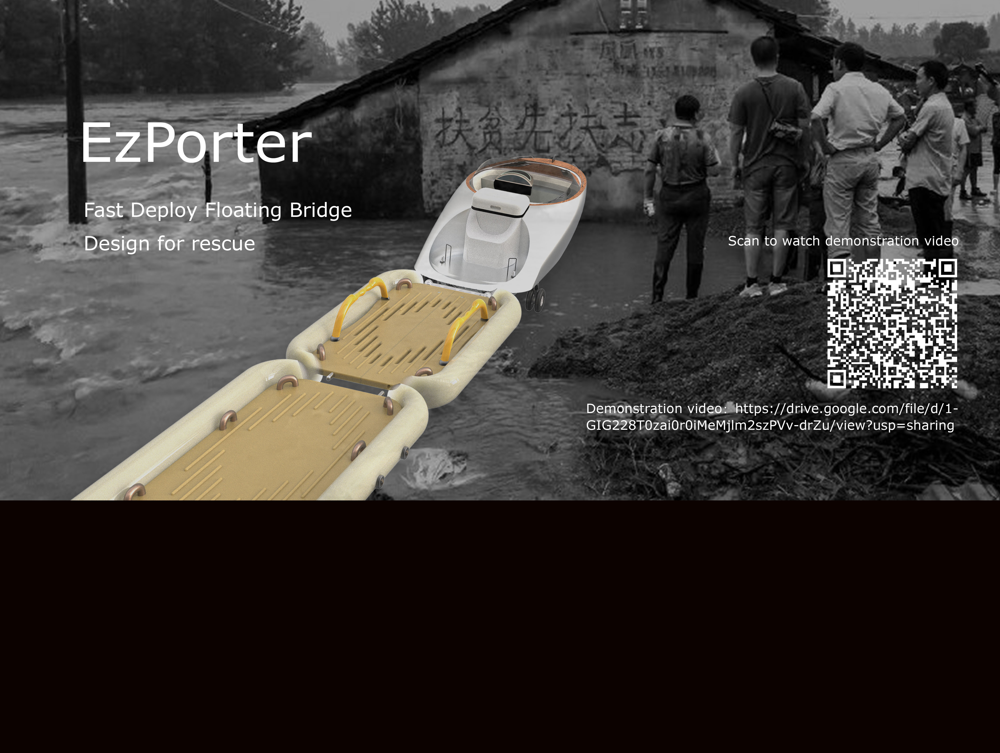
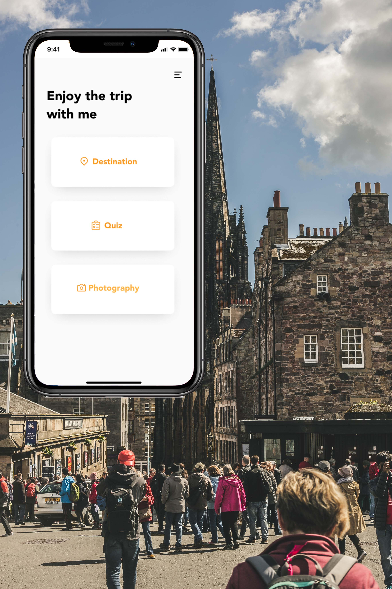
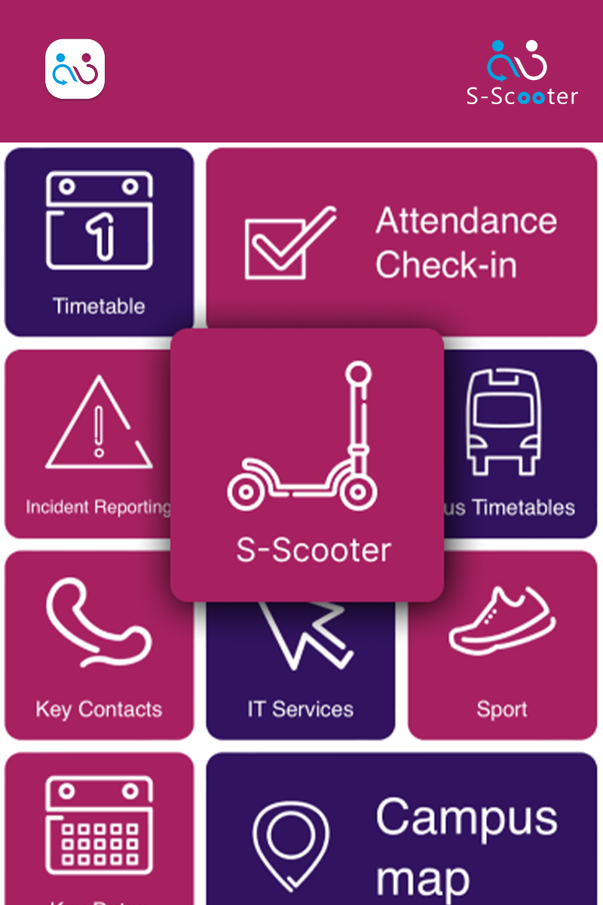
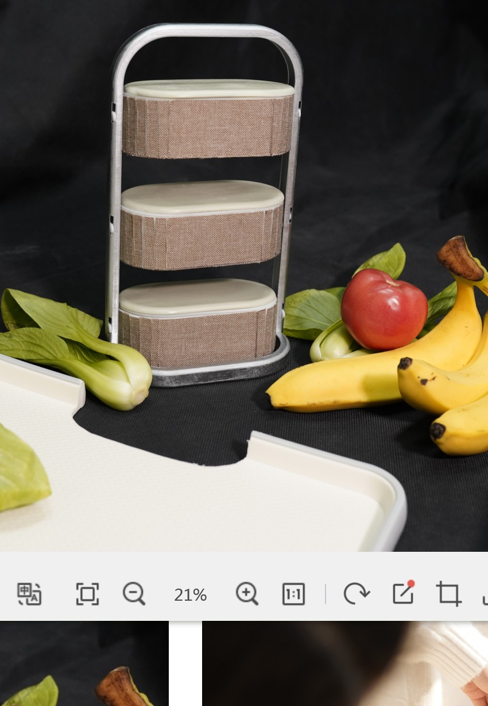
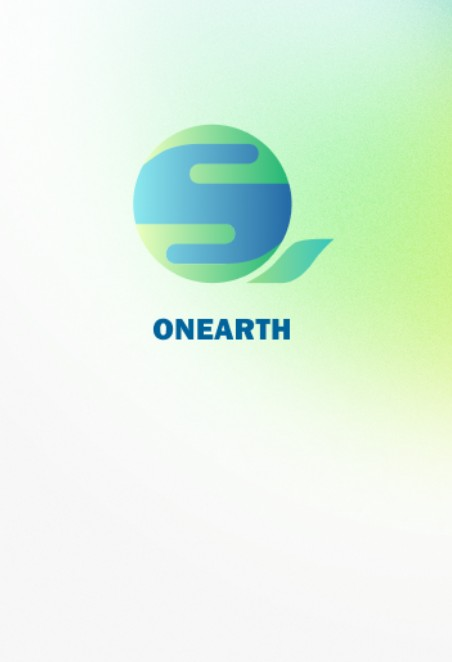

Rosaline Xiangyu Xiao
Engineer, researcher, designer, photographer
Pinch all five fingers together, then release.
Camera

NEW PROJECT · UNITY WEBGL
From simulation to an explorable factory
Explore an EV battery assembly line in your browser—a new interactive project from my industrial metaverse and VR research.
Explore the factory ↗Table of contents
A few directions.
Selected project references
Projects in view.
From simulation to an explorable factory
An EV battery assembly line in Unity, driven by selected manufacturing simulation data. Explore how materials, machines, buffers and AGVs move through a connected factory.

HCIEco Circle
Campus recycling experience design with system thinking, sustainable behaviour, and digital interaction.

HCIPlant Companion
Ambient interaction prototype connecting plant care, feedback, sensors, and emotion.

Product DesignSpaceCube
Compact product system exploring light, material experimentation, and spatial transformation.

Product DesignEzPorter
Rescue-oriented industrial design study balancing mechanical packaging and deployment logic.

HCIDRT Bus Experience
Tourist mobility service design with route guidance, quiz moments, and trip support.

HCIS-Scooter
Sustainable mobility experience for neighbourhood travel and everyday route choices.

Product DesignBENTO+
Modular object study focused on everyday use, portability, and product language.

Photography & MoreONEARTH
Energy-saving app concept with visual systems, behaviour change, and interaction design.